这可能是我最后一天出门|郭晶的捂汗风尘日记|2⁄9-2⁄11
原文链接 备份链接 2月9日捂汗江边的荻（图片由郭晶提供） 上一篇合集我们尝试了3次最后还是被山掉了。但在郭晶的微博上看可以看到。想及时获得最新内容的朋友可以在微博上关注@社工郭晶。 文末有郭晶的个人微信二维码，也可以申请添加。她每天会在 …

2月16日马路上晒太阳的狗
（图片由郭晶提供）
这是我的朋友郭晶的日记。
记录了封城期间在武汉独居的外地女性的真实生活体验和心理感受。
这些文字见证了郭晶如何从适应突发危机到重建日常生活，再到尝试帮助他人的过程。
想及时获得最新内容的朋友可以在微博上关注@社工郭晶。
文末有郭晶的个人微信二维码，也可以申请添加。她每天会在朋友圈更新。（但请不要找郭晶闲聊，以免增加她的负担。）
为了方便大家阅读，这个公号会大概每三四天集中搬运一次。
这些措施是否必要也不重要，
只要疫情会过去，
它们就可以是有利措施。

2月16日

倒霉是怎么一回事？
我19年11月搬到捂汗，捂汗12月就出现了新型冠状病毒，1月病毒大范围扩散。
前两天下暴雨，我住的房子漏水。
12月，我在闲鱼上买的电饭煲和炒锅，现在电饭煲按钮也出了点问题，要按很多下才有反应。炒锅的手把上掉了一个螺丝。
拖把的积水拉手位置的螺丝掉进了蹲厕里。
我算挺倒霉的，但肯定不是最倒霉的。遇到倒霉事怎么办？小人物只能自己处理。
何昊倒霉吗？他14日发了一个微博，写道：从没觉得我爸有多大本事，当了一辈子官我没沾到一点好处。直到这次疫情，在全省封路的情况下，通过他的关系派车把我从天门接回荆州。
天门一度是新型冠状病毒费盐死亡率最高的城市，困在天门很倒霉，想离开是人之常情。可是在这种情况下能离开的人很少。何昊还在微博上晒过2019年的支付宝账单，支出共286万，其中居家生活212万元，穿衣打扮32万元。
2月15日，何昊发了一个道歉书，解释说他的父亲是荆州市商务部门的科长何炎仿，无权派车把他从天门接回。他在微博上宣称何炎仿只是利用朋友的关系，在天门联系了一辆运输生活物资的返程车辆将他带回。
何昊称自己是一个在广州从事服装经营的个体户，支付宝年度账单是他经营的流水账单，不是他父亲给予的，发表出来是为了炫耀自己的成绩。
何昊很倒霉，本来只是虚荣心作祟，想炫耀一下，却遇到认真的网友。可是他已然运用了自己的特权，获得了好处，这个冠冕堂皇的道歉又对谁有实际的帮助呢？
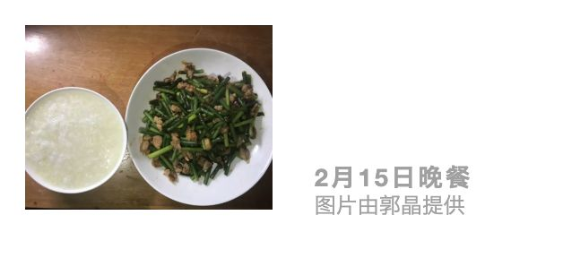
昨天的晚餐是蒜苔炒肉加稀饭。
昨晚房间里只有一个台灯，我在半黑暗中和朋友们聊天。
有人说一度有几天没胃口，后来发现只是自己做饭太难吃了。
有人说“风尘还不到一个月，感觉半年过去了。”
我们聊到伴侣对前任的分手暴力跟自己是否有关。首先，不管是否是前任，一个人对前任有分手暴力，我们都不应该视而不见，而应该为阻止暴力或者要求道歉等惩罚出一份力。另外，很多施暴者都是只对某个人施暴，TA不会轻易改变TA的行为模式。
2018年11月，蒋劲夫曾因家暴日本女友被拘留。2019年11月，蒋劲夫的新女友称她被蒋劲夫家暴了，她说和蒋劲夫在一起的日子，就像在监狱。所以对于自己而言，伴侣如果对之前的暴力行为毫无歉意，那你可能成为下一个受害者。
我对限制出门感到担忧，我再次有一种恐慌感，聊天的时候我有点像吃东西，好像也不是因为饿，但不知道什么时候会没吃的，吃了一个牛肉粒，也不敢多吃。
睡前我开始胡思乱想：如果物业不让出门，我可以从被暴风雨破坏的临时围栏的空隙中偷着跑出去。可是，我不知道如果我偷着跑出小区被发现会有什么惩罚，我担心我现在承受不起破坏规则的代价，尽管这个规则是不合理的。
我对能否出门的担忧进入了我的梦。梦里的我和别人困在一个我不熟悉的地方。这个地方有不止一个门，我们去到一个门被拦下来后，就再去试下一个门是否能够出去。
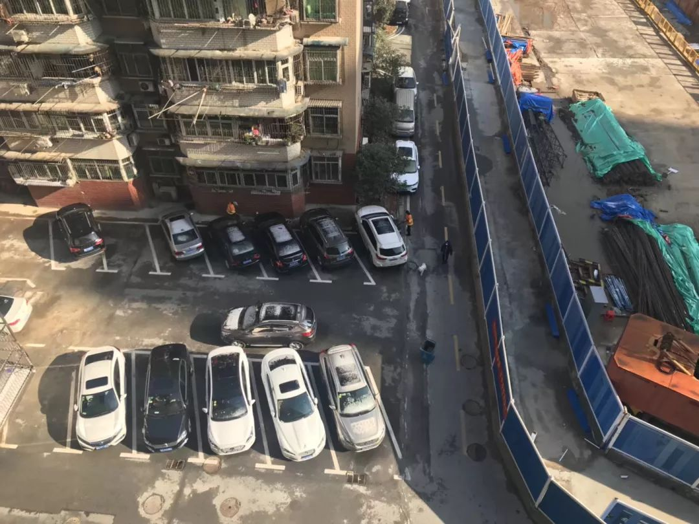
2月16日小区楼下的人和车
（图片由郭晶提供）
今天阳光明媚，外面的路基本干了，没有太多下过暴风雨的痕迹。楼下的小区有两个环卫工在扫地，一个人在遛狗。
我打开订餐appX了么，所有的超市界面都显示着“临时休息中，请改天再来”。
因为昨天要求出小区被拒绝，我不知道今天能不能开到出门证。我抱着试一试的心态到了物业管理室，我说要出去买菜，工作人员给我开了个“居民临时通行证”，这个通行证看起来是批量生产的，上面写着住址和出入日期，出入日期最早是2月12日。
临时通行证上还有备注：
1.一户一证，请妥善保管，
2.每户每三天可派一人外出，
3.凭此证出入小区。
我成了一个要被批准才能出门的人。
出小区的时候，保安拦下了我，也没看临时通行证，而是给我拍了一张照。我似乎也没有拒绝的权利，都忘了问他为什么拍照，只是想着要出门。他还叮嘱我说：“一次多买点菜。”出门的瞬间觉得轻松了许多。
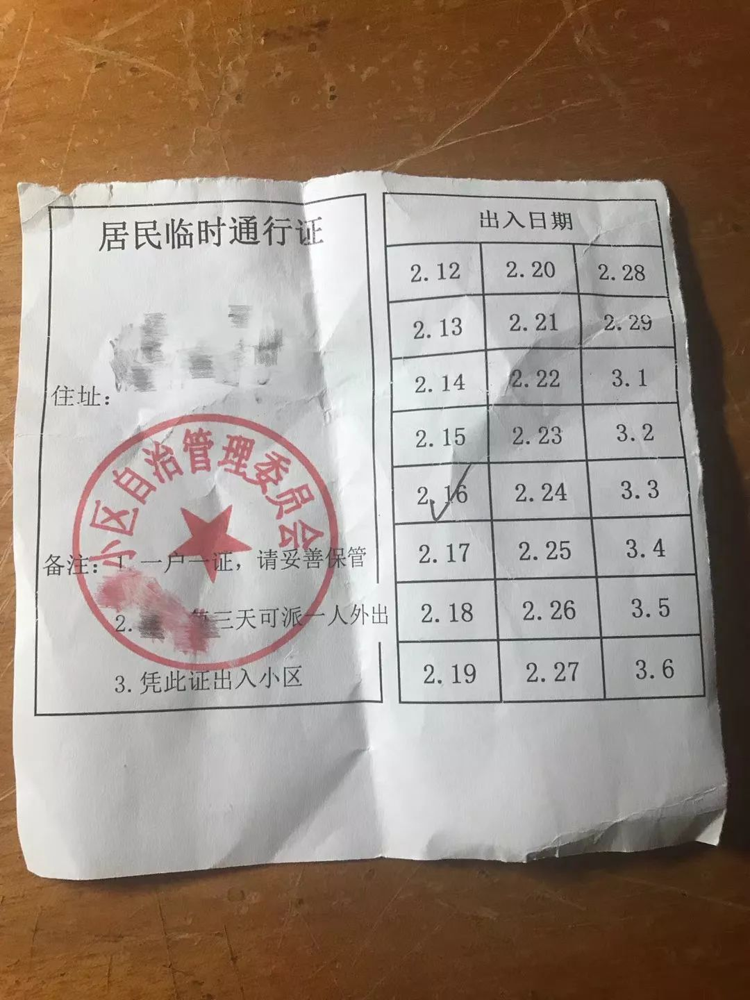
2月16日居民临时通行证
（图片由郭晶提供）
有三只狗在路中间晒太阳。有一个巷子口被蓝色围栏遮住了，蓝色围栏外面又用黄色护栏和一辆摩拜单车抵住。蓝色围栏上贴着《武昌区关于实行居民区封闭式管理的公告》，内容有八条：
一、严格实行小区封闭式管理；
二、严格杜绝集聚性活动；
三、严格返汉人员管理；
四、严格公共场所管理；
五、严格居家观察管理；
六、严格信息发布；
七、严格小区环境治理和出租房管理；
八、严格执纪执法。
第七条写道：“落实出租房管理责任，加强对承租人管理，如有异常情况，要第一时间报告，若发生疫情未及时报告，将依法追究房屋出租人或单位的法律责任。”
这是让房东监管租客吗？一般租房的人应该都是成年人，如果真的感染了费盐，是自己负责吧。很多人和房东也不住在一起，要如何监管？这会不会让房东把租客赶走呢？
这时，有人把蓝色围栏推开一些，从里面走了出来。不止一处的巷口或路过被封起来。看来我企图通过临时围栏跑出小区的想法太天真了。我能想到的他们都想到了，他们已经把能封的地方都封了。

2月16日被封住的巷口
（图片由郭晶提供）
超市的路口有社区工作人员在贴公告。一个人贴完后，另外一个人拍照。
超市门口有十多个人排队，大家都自觉地排队，等有人出来再进去。这时，有个人径直走了进去，排队的人都很愤怒，有人骂了起来，“没见过这么不要脸的人”。进去的人也不知道是谁，也没有回应大家的愤怒和谩骂。
每次在超市里面的人大概有二十多个。超市门口水果架上的水果比以往空了一些。蔬菜挺齐全的。有个放速冻食品的冰柜空了，酸奶的架子比较空，午餐肉、香肠这些都没了。今天的肉柜里有肉。
我今天的心情和第一天风尘有点像，再次为生存担忧。现在是三天外出一次，不知道明天会不会改成五天一次，甚至十天一次，一个月一次。我又买了5公斤大米、两袋面条和够我吃一星期的菜。
出了超市我发现刚才骑共享单车过来忘了锁车，那辆车被人骑走了。我的账户就被暂时冻结了，我只得拎着十几公斤的东西走回家。
走在路上，我想到了《使女的故事》，它是玛格丽特·阿特伍德写的反乌托邦小说，被改编为同名电视剧。我只看了电视剧，在剧中，极端宗教势力占领美国部分国土，成立了吉列共和国，用武装力量管控国家。
在这个国家每个人都有特定的职责，而很多人必须被迫接受自己的职责。剧中的女性一开始银行卡被冻结，接着女员工被公司辞退，有生育能力的女性沦为使女，每月要和主教进行 “受精仪式”，为主教的家庭生孩子，而孩子出生后便和使女无关。
从风尘到封小区，我们的活动被控制得越来越紧，我们对世界的掌控感被一点点剥夺。
我下次出门的日期是2月19日。
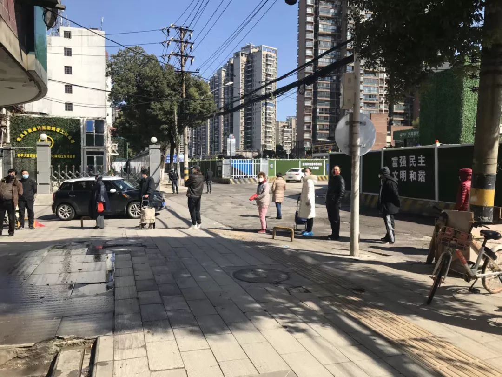
2月16日超市外排队的人（图片由郭晶提供）
2月17日
囤积多少食物才够？
朋友问我家里现在有多少大米，我说十几公斤。她说这也就够吃一个月，让我再囤一些。我知道她说的对，可是我难以接受不断囤东西的状态，感觉很变态。她有点担心地说，“可是没有食物，现在没有任何人能帮到你。”人一般在极端的状况下才会囤积很多食物，我一定程度上还在否认自己的处境。
有人觉得封锁小区是为了控制疫情，可我更加觉得是控制人。风尘后出门的人本来就是少数，大家都会做防护，也尽量少去人口密集的地方。在这样的情况下，病毒的传染性是很低的，但我也不敢说毫无可能性，也没有人敢说。我出门也依然会带着些许的担忧。
可是这个可能性是否足以大到封锁小区呢？因为封锁小区会加深人们的恐慌和无力。封小区后，我通过出门了解周围的情况找回的掌控感再次被剥夺。
当然，还是有人觉得封小区是必要的，如果我不幸感染费盐，这些人甚至可能会拍手称快。

昨天的晚餐是包菜炒肉加稀饭。那个掉了一个螺丝的炒锅终于撑不住了，整个手把都掉了。幸好，前房客留下了一个炒锅，虽然炒菜的时候容易糊。
晚上和朋友们聊天。有人在吃夫妻肺片，大家集体表示羡慕。
有人酷爱吃辣，而现在她只能在梦里吃到麻辣烫了。
有人开始在家上班，她说周一至周五要工作。
风尘以来，我都没有了“今天周几”的概念，只有“今天”和“明天”。
在湖北某县城的朋友说她那里戒严程度已经成了不能出户，有亲戚转发个视频，显示有人出门晒衣服都被抓走了。网上有河北、上海、湖北等多地打麻将的人被抓，有人被行政拘留，有人被罚款，有人写了检讨上电视读保证书。
有人说恒大房产发了特大优惠通知，2月18日至2月29日期间，全国各在售楼盘可享受75折优惠。这是很大的优惠，可是买不起的人依然买不起。现在全国高速公路免费，可是现在多少人还能开车上高速呀？
有钱人通过买房子增值，一般人只能通过买大米保命。有些便宜是普通人享受不到的。
晚上梦到我的隐形眼镜碎了，疫情期间也没法配，也不是很大的事，可是我在梦里嚎啕大哭。这个隐形眼镜戴了快半年，一开始特别磨眼，时不时地流泪，现在终于习惯了。

2月16日的公告（图片由郭晶提供）
今天早上7点多醒了，醒来后睁开眼看着头顶的天花板，突然发现天花板上的灯外壳上面有个喜羊羊。这是我之前没有注意到的，平时我不会没事躺在床上看天花板。我吓了一跳，赶快起了床。
风尘后，我对周围的环境多了一些注意，是之前不会有的注意，而这是因为有一部分世界消失了。我有很多情绪，愤怒、伤心、无力，但这些情绪一起转化成了麻木。
风尘那天我买了面粉，想着有空可以煎鸡蛋饼，可是至今我没有心情煎个饼。我买的红薯也只吃过一次，于是我在煮粥的时候加了一个红薯。
今天太阳依旧很好，有点晃眼的那种。天空蓝得很清澈。可惜我住的房子朝北，晒不到太阳，于是吃完早饭就下楼到小区里晒太阳。
我住的小区有3栋楼，我住的这栋有10层楼，其余两栋只有7层。小区总共有200多户。现在只能在社区里走，运动量非常有限，我住7楼，就开始走楼梯上下楼。
小区很小，能晒到太阳的地方也很少，我只能在两座楼的间隙里长50米的地方来回走。有个中年男人也在散步，他的手机里放着戏曲。我则带着耳机听音乐。风尘以来我都没有听伤感的音乐。
终于我们都被指定监视居住了。指定监视居住一般是针对犯罪嫌疑人的，而现在很多人都在“享受”此待遇。
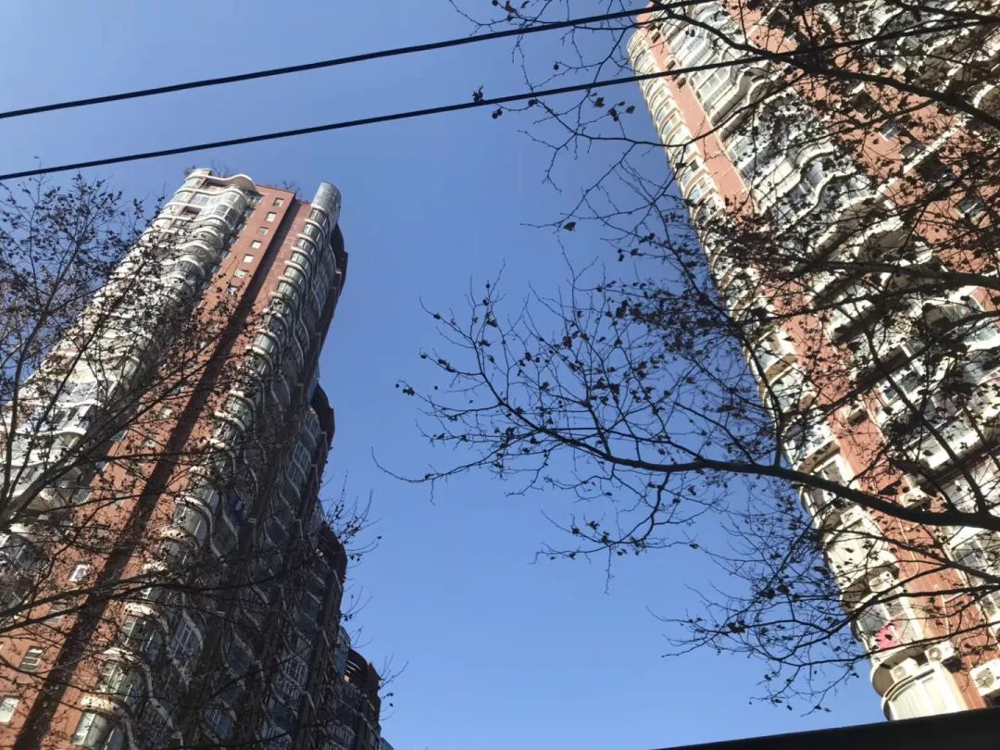
2月17日的蓝天（图片由郭晶提供）
今天，小区平常给人走的门也被蓝色围栏挡了起来。小区的群里有人发信息，提醒大家注意：不听话乱窜人员，集中到体育馆学习14天，伙食费每天50元自费。
小区的群里开始发起各种团购，买菜的、买肉的，团购要达到一定份量才送。我昨天进了小区的群，群里偶尔在接龙买东西，我一开始很抗拒。风尘前，我都是在网上买菜，现在我极度渴望可以自己去买菜。今天，我终于还是参与了群里的团购接龙。
下午5点左右听到有人敲门，我紧张了一下，隔着门问“谁呀？”
“社区的，不用开门。家里几个人？”
“一个”
“体温正常吗？”
“正常。”
“门上贴了社区的电话，有事打电话。”
他们走了一个小时后，我开门想把门上的纸撕下来，粘得有点牢，我就拍了照。门上贴的是“新型冠状费盐入户排查表”，上面写着居家人员数量、健康状况，留了社区的联系方式。
打印排查表的打印机应该出了问题，有些地方的字特别浅，但也看得出来内容。我进屋之后洗了手。

2月17日的入户排查表（图片由郭晶提供）
2月18日
这几天，我有一种在沼泽地前行还被背后捅刀的感觉。我以为风尘已经很糟了，可是接下来还有封小区，从三天出一次门到不能出门。我没有反对这些措施的权利。这些措施是否必要也不重要，只要疫情会过去，它们就可以是有利措施。
人们现在不得不被集体化，个人消失了。今天早上小区群里发了一个文件，是《关于小区封闭管理期间的居民基本生活物资保障措施》，显示营业商超只接受团购业务。这些团购业务都要达到一定份量才送，一般都要30份。我所在的小区群昨天只有七十多人，有人担心拼不了团。
团购只能顾及大家的一般性需求，没法考虑到每个人的特殊需求。有人在小区群里发了个蔬菜配送，有两个套餐：A套餐，50元，有冬瓜、芹菜、娃娃菜、茼蒿、土豆，5个品种，约13斤；B套餐，88元，豌豆、玉米、胡萝卜、红薯、茄子、青杭椒，6个品种，约13斤。
这是强制配的套餐，没法考虑到每个人的喜好。A套餐里我会不想要娃娃菜，B套餐里我又不喜欢豌豆。而且，看似有两个选择，其实没有选择。
别人选什么，我就要跟着选。套餐里也没有调味料。我是一个无辣不欢的人，幸亏自己囤了几瓶辣酱，不然吃饭就很痛苦。除了食物，人们还有很多日常需求，可能有人家里没有牙膏了，可能有人要买卫生纸。
之前就有人问过我有没有加小区的群，有的社区会帮忙买东西。我当时回复说，需要帮助的人很多，我还可以照顾自己。可是，现在我被迫需要帮助。
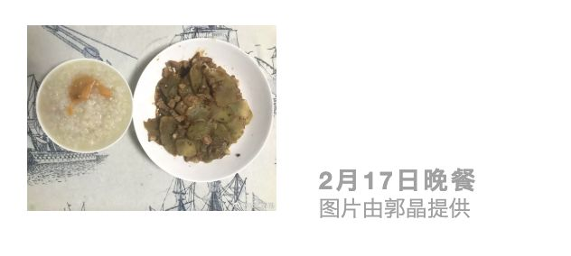
昨晚的晚餐是莴笋炒肉加稀饭。
这两天我的手开始长红疹，我洗碗从未戴过手套，但昨天开始洗碗开始戴上了手套。
晚饭后我接受了一个特别的采访，采访我的人是朋友的女儿。
朋友打了微信语音给我，她女儿一本正经地介绍了自己：“我是小记者黄某某，我在做有关新型冠状病毒的采访。”
我一听也赶快认真起来，说：“我是郭晶，现在在捂汗。”
她严肃地说：“那你很符合我的采访要求。”接着，她问我：“你怎么看待新型冠状病毒？”
我有点懵，这让我从何答起，我只能如实说；“这个问题有点大。具体一点讲，它是看不见的病毒，是有传染性的。”
她还问了病毒对我生活的影响，我也回问了她。她说：“我都不想出门了，有次和爸妈出去玩，回家后口罩里都是水。”
结束采访后，我和朋友视频，小记者很热情地给我介绍她给姐夫画的头盔，她和爸爸的和解证书。她现在开始在线上上课。
如此有能量的小孩被关在家里也是难为她了。很多人不能出门，家里也没有活动空间，那该多惨呀。
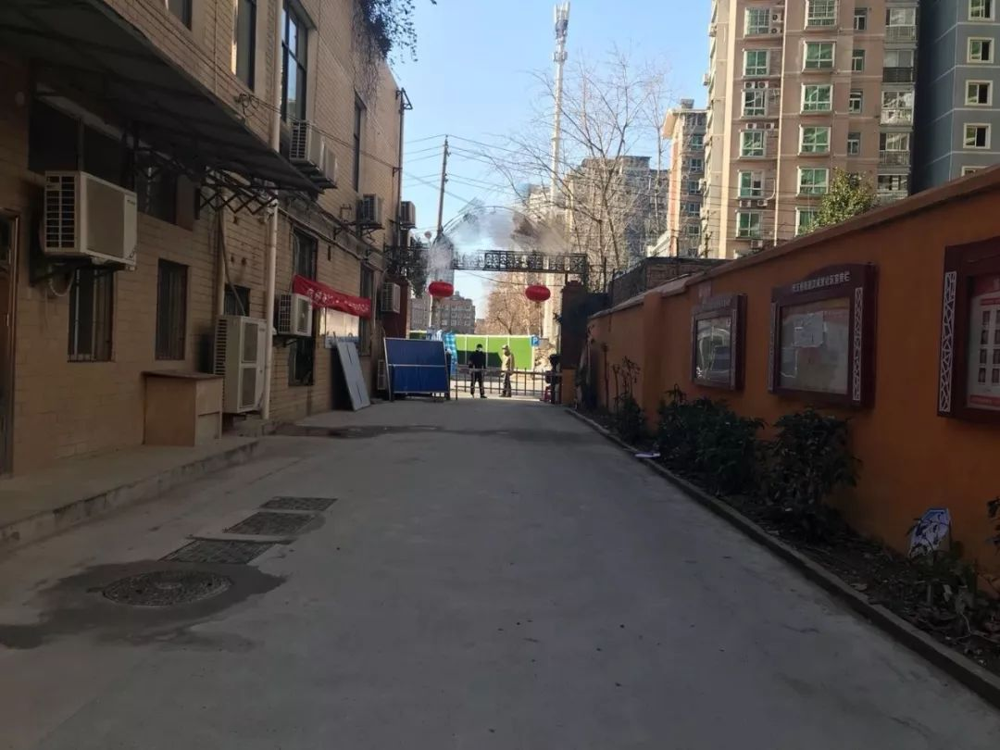
2月17日被封了一半的小区门
（图片由郭晶提供）
晚上和朋友们聊天。有人去算了命，她是白手起家命，2020年和2021年很倒霉，2022年会转运。我说：“这也太忽悠了，所有人2020年都很倒霉”。
有人说现在最想吃火锅，然后是唱K。好消息是有个朋友所在的县城发了文件说要对县城降级管控，可能县城内部会放开管控，允许人们正常出行。
我们聊了出轨，有人没有魄力分手，要找到下一段关系才更有安全感，开始脱离上一段关系。大家分手的时候会有各种考虑，有人是因为在北京一个人生活成本太高。
出轨的内疚感跟关系出现何种问题有关，只是不合适内疚感可能会强一些，如果是因为关系中出现控制和难以调和的争吵，内疚感就会少一些。有人曾在保持一段关系的时候约炮，她在约炮的时候会担心被抢劫、遭受暴力。
恋爱或婚姻关系中的出轨被认为是极其严重的违约，但女人出轨则更加的不道德，会遭受更加严酷的社会攻击。
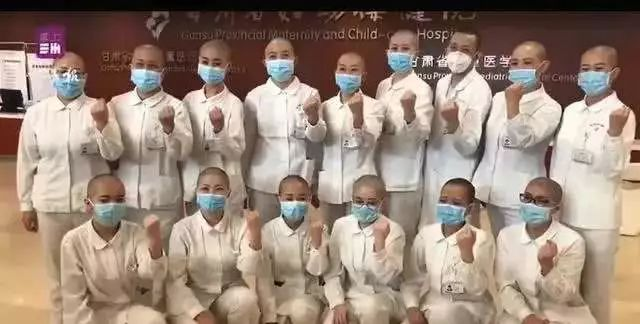
甘肃女护士被剃光头
（图片来自网络）
我们谈到甘肃女护士被剃光头，而合照的照片中唯一的一个男性则是短发，很多女性在被剃头的时候极不情愿，甚至有人哭了。头发关乎的不只是外貌，而是尊严。剃头是否必要？是否经过同意？女性的身体从未真正属于自己，总是有人比女人自己更有权力处置女人的身体。
有朋友说中学在学校被强迫剪了短发，回家就很伤心地哭。去年，贵州一个初中男老师提了一桶水，让女生排队，轮流给她们卸妆。化妆品公司为了鼓励女性消费，又在鼓励女人化妆。化妆也成为成熟女人的一个标志。
有人发了一个小道消息：明天开始进入严打阶段，严打期间所有超市、药店、外卖平台全部停止，之前的车辆通行证也全部作废了，所有人除执勤人员外严禁上街，我们可能也没办法给大家送菜送药了。
如今，小道消息成为人们获取信息的重要来源。传播小道消息是人们在封锁中的互助行为。很多团购都是在手机上操作，如果有些老人家没用智能手机怎么办？
我讲到一种特殊的内疚感，那是活着的内疚感。我们现在活着一定程度上是别人的牺牲换来的。
现在全国封路封村，很多行业都受到影响，蜜蜂养殖的要根据季节找有花源的地方，现在则不能转场。2月13日，困在云南的的四川蜂农刘德成自杀。因为云南花期已过，他的蜜蜂农药中毒而死。2月15日，中国养蜂学会发了文件，里面提到确保“转场蜜蜂”的运输通畅。
这是我第一次离大规模的不公正的死亡那么近，太惨烈了，而我却有幸还活着。我必须要更努力地活着才行。

刘德成的死亡证明
（图片来自网络）
晚上，我梦到有个邻居的女孩第一次来例假，她不知所措，紧张地哭了。我靠近她，发现她身上还贴着用过的卫生巾，我把它们一一撕下来，陪她一起去卫生间。
今天阳光依旧灿烂，吃完早饭下楼晒太阳。我走楼梯，走到5楼的时候听到有个狗在汪汪汪地叫个不停，也不见狗出来，我停了一下，等了一会有人把狗拉了回去。狗也不甘寂寞吧。
楼下的地上摆着几包爱心包菜，大家都可以领。物业工作人员问我家里几个人，我说：“一个”。她想了一下，说：“那给你两个小的吧。”物业的人偶尔喊句“下楼领菜。”有人在楼上问“是昨天订的菜吗？”有人说：“屋里有菜。”
楼下还挺热闹，小区院子里有十个左右的人，偶尔三两成群地聊天。昨天那个男人依旧在放着戏曲。有人打开院子里的车，车里放着范玮琪和张韶涵的《如果的事》，节奏很欢快，像是在悠闲地度假。
有人在围墙边晒太阳。有人摘下口罩抽烟。院子里的大都是男人，物业有个工作人员是个中年妇女，偶尔有女人下楼拿菜或丢垃圾。有人在楼外晒床单、枕头。
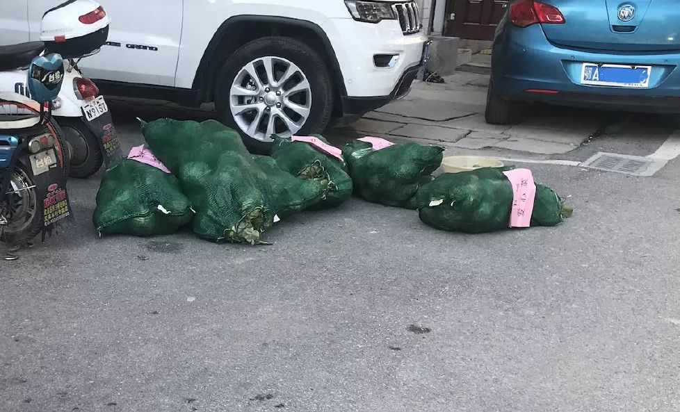
2月18日的爱心包菜
（图片由郭晶提供）
昨天的拼团没收到，小区的人在群里问前一天的拼团有没有成功。有人发了新的团购商品。有人问：能不能买鱼和肉？有人问：为什么没有米和油？有人问物业的工作人员能不能帮忙买文具，家里的孩子们要用。
提要求的人还得“谢谢” 。物业的人是大家和外界的联系，我们要靠他们买东西。这个谢谢的义务也成了被迫的。
小区的群里下午有1栋的住户说家里的下水道往上出水，物业的人说1栋西南边的住户暂时不要在厨房用水，一律在卫生间用水。有2栋的住户说卫生间一直翻臭味。
回到家，望着窗外的阳光，忽然想到明天可以带本书下楼晒太阳的时候看。这个想法在脑子里浮过的时候，我在心里偷偷地赞赏了一下自己。
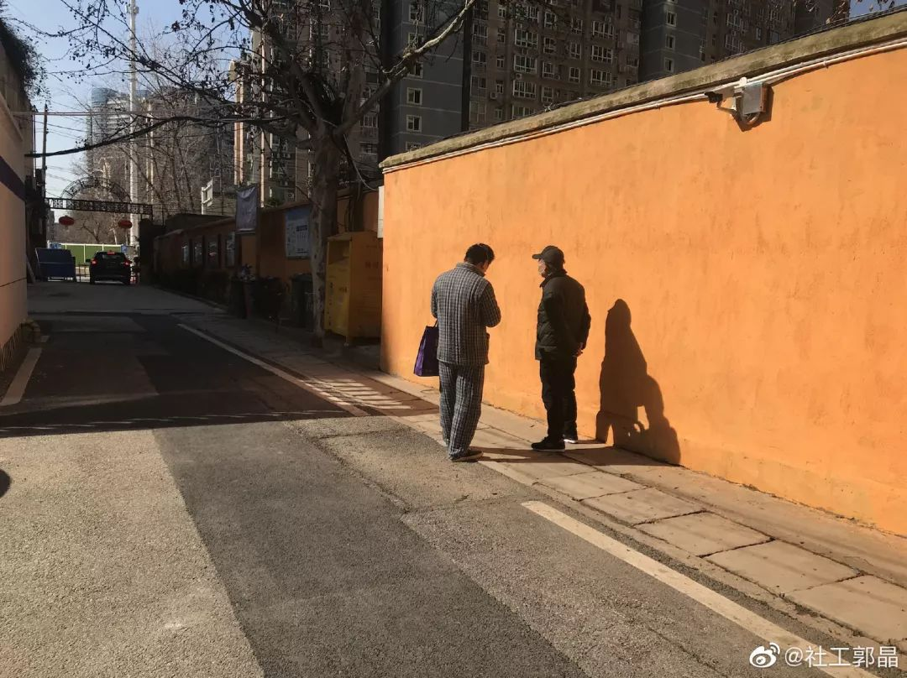
2月18日在小区里晒太阳的人
（图片由郭晶提供）
2月19日
尽管我们的处境极其被动，人们依旧在其中寻找主动性。有一天我看到一个采访，在一线救治病人的医生说：“总想能再做点什么。”这十分令人感动。不止医护人员是这么想，很多志愿者也在这么做。
疫情中，有肺炎感染病人和疑似患病的人在网上求助，有一些志愿团体会收集网上的求助信息，联系当事人，确认需求，有志愿医生帮病人看CT，协助判断病人的病情，有人协助联系社区和医院。有人关注慢性病人的求医需求，有人关注医护人员的就餐问题，有人关注到女性医护人员的需要，有人关注环卫工的工作状况，有人组成志愿车队……
封锁也给这些志愿工作带来了阻碍，大家并没有轻易放弃。救援物资曾被红➕字会拦下来，他们就想别的办法，尽管不确定能不能成功，但他们都尽力去做。人们不是因为有希望而行动，而是在用行动创造希望。
封城以来，尽管我们的掌控感不断被剥夺，但我都没有活不下去的绝望。人们在逆境中的抗争也给了我力量。人们不是完全的被动，即便在我们的小区群里，总是业主往群里发一些团购信息，物业的人说不知道如何团购，有人就打电话问清楚，让物业的人加一个群，不用跟社区对接。有人在群里发起团购接龙，直接把收集好的需求发给超市。
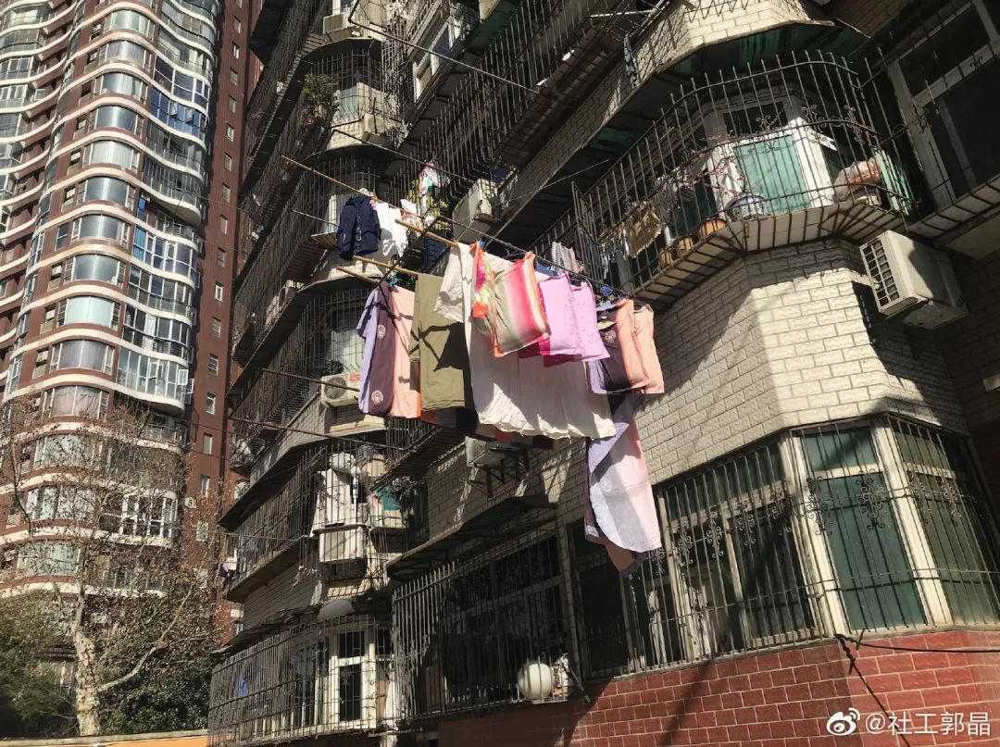
2月18日晒被子的人家
（图片由郭晶提供）
昨晚的晚餐是香菇炒肉加稀饭。
晚饭后和朋友们聊天。大家说现在好消息很珍贵，大家就纷纷讲了自己的好消息，有人在家里拍了家庭合照，有人写了文章，有人开始做拖延了很久的工作，有人看了摄影的书。有人讲到一个朋友的摄影作品获奖，拿到15万。大家纷纷表示赞赏。
而后发现这个朋友从大学期间就很勤奋，积极地向别人学习经验，做很多实践。大部分人都并没有所谓的天赋，也没有雄厚的家庭背景。这些人的成功必须要靠努力。
我们聊到整齐划一的美学，有人说自己的老师曾称赞大家穿一样的衣服做广播体操很美，很多人中学时期都必须穿校服。有人就自己改衣服，有人为了更舒服就把衣服扯得更宽松，有人则试图把校服改得更符合自己的审美。
有人说校服的质量很差，穿了之后身体出红疹，她妈妈就到学校找校长理论，尽管校长并没有为此改善校服的质量，妈妈后来自己买了类似的布料给她做了校服。妈妈的行为对她来说是很好的借鉴，她现在看到不公也会据理力争。

2月19日躲在汽车下的猫咪
（图片由郭晶提供）
大家说到敢于争取的品质很珍贵。有人说妈妈曾在医院里输液，按照医嘱上明明还有两瓶点滴要输，护士却说还有三瓶点滴。妈妈就问护士那三瓶点滴是什么，要和医嘱上核对一下。护士支支吾吾地，明显是输错了药。朋友的爸爸却因为怕事劝阻妈妈不要跟护士争。
有人发了一个微信文章，解释说4000万蝗虫逼近中国的信息是假信息。文章里写道，最先爆出这一消息的是一个微信公众号。这些信息后来被各大主流媒体报道，如中国新闻网、澎湃新闻。
当然，印度19年6月开始确实发生了蝗灾，只有没有那么大规模，而且现在已经基本平息。有人在评论区里留言，说很多农药股涨价了。这个微信文章不知道是不是是一个商业阴谋，谁料主流媒体也没有核实信息来源和真实性就做了报道。这竟然也算一个好消息。
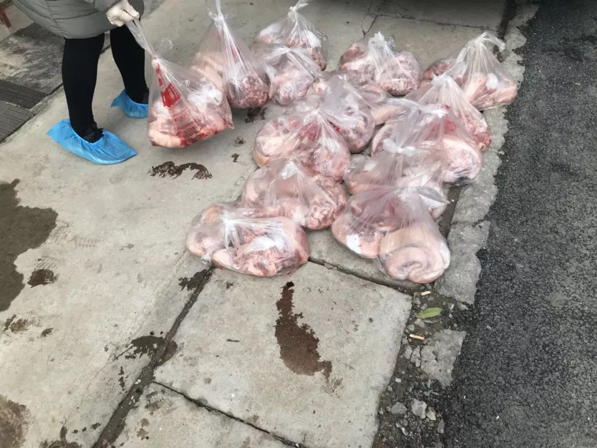
2月19日送到小区的团购猪肉（图片由郭晶提供）
早上起来发现是阴天，也就不想下楼。楼下有两个遛狗的人，有只狗突然开始不停地叫唤，主人拉着它上了楼。
自从拖把的挤水拉手位置掉了一个螺丝后，我就没有拖地了。我要想办法固定一下拉手。于是，我找了一个黑色胶带，把拉手两边的杆固定住，然后在掉了螺丝那一侧用细线缠绕很多圈，竟然也算牢固。
11点的时候，物业的人在小区群里让大家去领团购的肉。我才下了楼。这时外面有了阳光，只是稍微有些微弱，我拿了本书下去。毕竟阳光现在是生活中少有的美好，希望可以多晒一会太阳。
物业门口有五六个人在闲聊。有工作人员在物业办公室核对信息和交钱。我下去的时候只有3个人，我们也要排队一个个进办公室。我看到有人开车出门，就问了物业的工作人员什么人可以出门，他说：“一般都不能出，要有工作证明才行，一般是城管、公安、医生、护士。”

2月19日小区内交谈的人们（图片由郭晶提供）
我领了肉，在一个车旁边晒太阳。车底有个猫在小心翼翼地窥探世界，我蹲下来拍照，它就跑了。这几天都有风，今天的阳光比较弱，风吹在身上有点凉。阳光一会就没了，我也就上楼了。
中午吃完饭，我开始处理肉。我团购的肉套餐如下 ：前腿2斤，后腿2斤，五花肉2斤，排骨3斤。除了排骨之外，我要把这些肉分成一小块一小块的，每顿饭一块就比较方便。
我从未处理过这么多肉。肉又油又滑，本身就很难切。我家里的刀还有点钝，中间还有个缺口，这也加大了切肉的难度。
我不喜欢吃肥肉，在切肉的时候也努力把瘦肉和肥肉区分开，肥肉打算用来熬油，瘦肉就炒菜吃。我差不多搞了半个小时，都出了汗，切肉也是体力活。我越切越累，还有点反胃。最终，我把这些肉分成了35份。我把排骨也分成了7份。今晚应该吃不下肉了。
2月19日有缺口的菜刀
（图片由郭晶提供）
我想成为一个联结点，
希望可以和更多的人建立联结，一起行动。
我的微信号：1461177244。

阅读更多：

【播客】疫控时期，如何重建对生活的掌控感？
原文链接 备份链接 2月9日捂汗江边的荻（图片由郭晶提供） 上一篇合集我们尝试了3次最后还是被山掉了。但在郭晶的微博上看可以看到。想及时获得最新内容的朋友可以在微博上关注@社工郭晶。 文末有郭晶的个人微信二维码，也可以申请添加。她每天会在 …
原文链接 备份链接 2月13日社区卫生服务中心外聊天的三个人 （图片由郭晶提供） 这是我的朋友郭晶的日记。 记录了封城期间在武汉独居的外地女性的真实生活体验和心理感受。 这些文字见证了郭晶如何从适应突发危机到重建日常生活，再到尝试帮助他人 …
原文链接 备份链接 封城第17天，有好几位武汉日常的每日书作者们不约而同写到了买菜这件事。有人发现某电商平台的蔬菜起送价格突然被调高到了2000元，有人发现原先因为运力不足而延期开售的平台至今没有恢复，有人发现一筐鸡蛋已经卖到了 70 元 …
原文链接 备份链接 2月3日阳光下的武汉长江大桥 （图片由郭晶提供） 这是我的朋友郭晶的日记。 记录了封城期间在武汉独居的外地女性的真实生活体验和心理感受。 这些文字见证了郭晶如何从适应突发危机到重建日常生活，再到尝试帮助他人的过程。 之 …
原文链接 备份链接 1月31日出门健身的武汉市民（图片由郭晶提供） 这是我的朋友郭晶的日记。 记录了封城期间在武汉独居的外地女性的真实生活体验和心理感受。 这些文字见证了郭晶如何从适应突发危机到重建日常生活，再到尝试帮助他人的过程。 之前 …